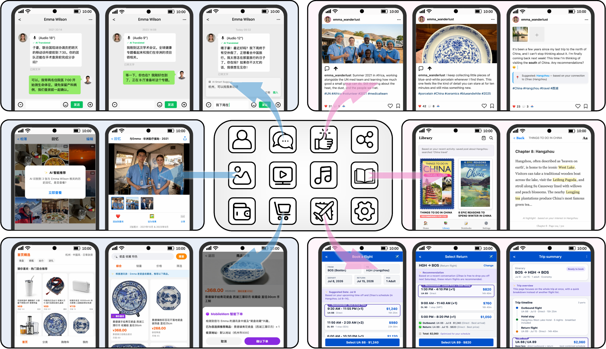

Why MobileMem
MobileMem
MobileMem：面向持续演进智能体的端侧记忆
MobileMem: On-Device Memory for Continually Evolving Agents
MobileMem 作为用户的个人记忆智能体，能够自动理解用户意图，执行跨时间的人脸识别以关联多年间女儿的身份，从海量照片档案中定位 2016 年的生日场景，并返回一家三口围坐在生日蛋糕旁的照片。
MobileMem acts as the user's personal memory agent, automatically understanding user intent, performing cross-time facial recognition to associate the daughter's identity across years, locating the 2016 birthday scene from a vast photo archive, and returning the photo of the family of three gathered around the birthday cake.
 User
User
 Daughter
Daughter
 User
User
 Daughter
Daughter


Research Features
MobileMem 的特色 MobileMem Features

01 打破应用数据孤岛 Breaking Data Silos 跨应用的统一记忆层 One memory layer across applications
MobileMem 将聊天、社交媒体、照片、阅读、购物和日历等数据汇入统一的记忆层，使手机能够跨场景理解用户的关系、兴趣与上下文。
MobileMem unifies chat, social media, photos, reading, shopping, and calendar data in a shared memory layer, preserving relationships, interests, and context across scenarios.
02 从推理到记忆 From Reasoning to Remembering 下一代个人助手的核心能力 A foundation for personal assistants
因此，AI 的未来不仅在于推理，也在于记忆。
Consequently, the future of AI lies not only in reasoning but also in remembering.
03 复合记忆架构 Composite Memory Architecture 系统级记忆层与应用专属记忆 System-level and application-specific memory
相反，我们设想一种由两个互补组件构成的复合记忆架构。这两个组件可以通过标准化协议协作，形成统一的记忆生态，其能力超过各个模块的简单叠加。
Instead, we envision a composite memory architecture consisting of two complementary components. These two components can collaborate through standardized protocols, forming a unified memory ecosystem whose capability exceeds the simple aggregation of individual modules.
04 KEME 合成框架 KEME Synthesis Framework 知识锚点、用户画像与时间约束 Anchors, persona knowledge, temporal constraints
在用户画像知识和时间约束的引导下，KEME 将这些锚定会话分层组织成统一的交互流，同时随着用户经历随时间展开，逐步合成人机交互。
Guided by user persona knowledge and temporal constraints, KEME hierarchically organizes these anchored sessions into a unified interaction stream, while progressively synthesizing human-assistant interactions that naturally emerge as the user’s experiences unfold over time.
05 双场景基准 Two Benchmark Scenarios 文本 MobileMem 与多模态 MobileMem-Omni Textual MobileMem and multimodal MobileMem-Omni
这些基准共同提供了一个综合框架，用于评估记忆系统从原始移动经验中合成、组织和检索结构化知识的有效性。
Together, these benchmarks provide a comprehensive framework for assessing how effectively memory systems synthesize, organize, and retrieve structured knowledge from raw mobile experiences.
Applications
MobileMem 的应用场景 Application Scenarios
01 生态系统 Ecosystem 移动 AI 助手长期记忆评测 Long-term memory evaluation for mobile AI assistants
MobileMem 被设计为一个统一基准，用于评估移动 AI 助手中的长期记忆，而不是一个独立的记忆系统。其模块化架构可无缝集成到现有移动智能体生态中，包括任务理解、记忆检索、问答、网页搜索、回复安全和执行模块。因此，MobileMem 支持不同记忆架构之间的可复现比较，并促进长期记忆评测接入真实开发管线。
MobileMem is designed as a unified benchmark for evaluating long-term memory in mobile AI assistants rather than a standalone memory system. Its modular architecture seamlessly integrates with the existing mobile agent ecosystem, including task understanding, memory retrieval, question answering, web search, response safety, and execution modules. Consequently, MobileMem supports reproducible comparison across different memory architectures and facilitates the integration of long-term memory evaluation into real-world development pipelines.
02 标准化 Standardization 真实手机记忆与统一评测框架 Authentic smartphone memory and unified protocols
MobileMem 的一个关键特征是，它由真实智能手机记忆构建，而不是合成交互日志或人工整理的用户画像。该基准在单一评测框架中统一了基础记忆、认知记忆、偏好记忆、时间推理和视觉推理，同时将评估建立在约一年真实用户活动之上。MobileMem 建立在原生移动应用生成的异构记忆源之上，包括日历、相册、笔记、文档、待办事项、账单、语音备忘录、屏幕记忆、视频记忆以及其他用户生成记录。
A key characteristic of MobileMem is that it is constructed from authentic smartphone memory rather than synthetic interaction logs or manually curated user profiles. The benchmark unifies foundational memory, cognitive memory, preference memory, temporal reasoning, and visual reasoning within a single evaluation framework, while grounding assessment in approximately one year of real user activities. MobileMem is built upon heterogeneous memory sources generated by native mobile applications, including calendars, albums, notes, documents, to-do lists, bills, voice memos, screen memories, video memories, and other user-generated records.
03 端侧智能 On-Device Intelligence 可度量、可比较、可持续改进 Measurable, comparable, continuously improvable
MobileMem 将长期记忆评测从定性能力展示转向可度量、可比较且可持续改进的评估。该基准为检索准确性、时间一致性、偏好理解、多模态推理和长程知识整合提供综合指标，从而能够客观比较不同记忆架构和检索策略。随着基础模型日益从云服务迁移到边缘设备，MobileMem 为评估可靠、高效、隐私感知且能通过长期用户交互持续演进的记忆系统提供了有效框架。
MobileMem shifts long-term memory evaluation from qualitative capability demonstrations to measurable, comparable, and continuously improvable assessment. The benchmark provides comprehensive metrics for retrieval accuracy, temporal consistency, preference understanding, multimodal reasoning, and long-horizon knowledge integration, enabling objective comparison among different memory architectures and retrieval strategies. As foundation models increasingly migrate from cloud services to edge devices, MobileMem offers an effective framework for evaluating reliable, efficient, and privacy-aware memory systems that continuously evolve through long-term user interactions.
04 用户记忆价值 User Memory Value 以长期多模态用户记忆作为个性化基本单元 Long-term multimodal user memory as personalization
从核心上看，MobileMem 将长期多模态用户记忆视为个性化的基本单元。不同于主要评估孤立事实回忆的传统问答基准，MobileMem 评估 AI 助手是否能够在扩展时间跨度内持续积累、检索、整合并推理不断演化的用户记忆。通过建模真实用户轨迹、多语言交互、动态偏好和真实世界事件，该基准鼓励开发能够提供上下文感知、主动且持续自适应辅助能力的 AI 助手。
At its core, MobileMem treats long-term multimodal user memory as the fundamental unit of personalization. Unlike conventional question answering benchmarks that primarily evaluate isolated factual recall, MobileMem evaluates whether AI assistants can continuously accumulate, retrieve, integrate, and reason over evolving user memories across extended temporal horizons. By modeling authentic user trajectories, multilingual interactions, dynamic preferences, and real-world events, the benchmark encourages the development of AI assistants capable of delivering context-aware, proactive, and continuously adaptive assistance.
05 OPPO 应用场景 OPPO Application Scenarios OPPO 原生记忆生态与生产级移动环境 OPPO native memory ecosystem and production mobile environments
MobileMem 已经接入 OPPO 的 AI 助手研发流程，用于系统性评估并提升生产级移动环境中的长期记忆能力。该基准建立在 OPPO 原生记忆生态之上，该生态提供了通过日常智能手机使用积累的多样长期记忆集合。这些记忆来源包括日历、相册、笔记、文档、待办事项、账单、语音备忘录、屏幕记忆、视频记忆以及其他用户生成记录，覆盖生产力、沟通、多媒体、金融和日常生活。
其中，屏幕记忆、视频记忆、语音记忆和账单记忆等代表性智能记忆服务，会自动将用户的浏览历史、多媒体收藏、语音提醒、支付记录和其他上下文信息组织成结构化长期记忆。除了记忆检索本身，MobileMem 还通过与任务理解模块、网页搜索系统、安全过滤器和执行引擎无缝集成，支持对记忆增强型 AI 助手进行端到端评测。
MobileMem has been integrated into OPPO's AI assistant development pipeline to systematically evaluate and improve long-term memory capabilities in production-grade mobile environments. The benchmark is built upon OPPO's native memory ecosystem, which provides a diverse collection of long-term memory accumulated through everyday smartphone usage. These memory sources include calendars, albums, notes, documents, to-do lists, bills, voice memos, screen memories, video memories, and other user-generated records, covering productivity, communication, multimedia, finance, and daily life.
Among them, representative intelligent memory services such as Screen Memory, Video Memory, Voice Memory, and Bill Memory automatically organize users' browsing histories, multimedia collections, spoken reminders, payment records, and other contextual information into structured long-term memories. Beyond memory retrieval itself, MobileMem also supports end-to-end evaluation of memory-augmented AI assistants by integrating seamlessly with task understanding modules, web search systems, safety filters, and execution engines.
快速开始 Quick Start
文本与多模态基准的安装、构建和评测入口维护在项目仓库中。
Setup, construction, and evaluation entry points for both benchmark tracks are maintained in the project repository.
Institutions
本工作由以下机构联合完成。
This work is jointly conducted by the following institutions.
由 OPPO 和 OpenKG 开发。
Developed by OPPO and OpenKG.